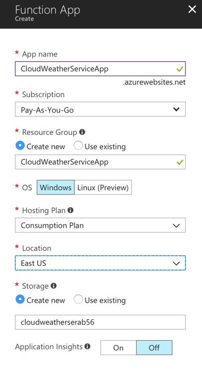
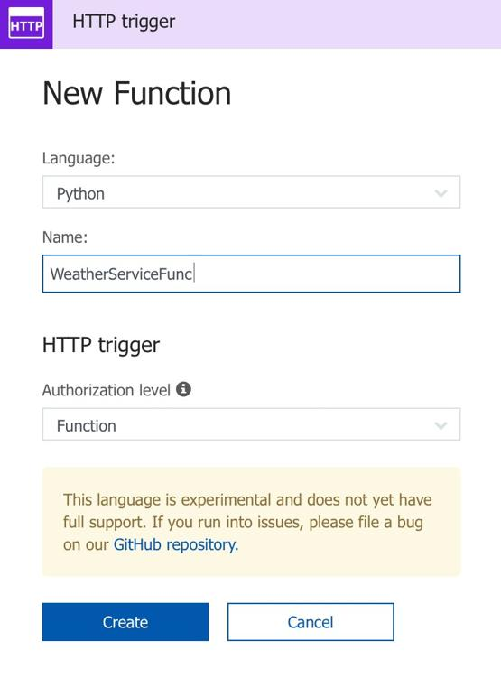
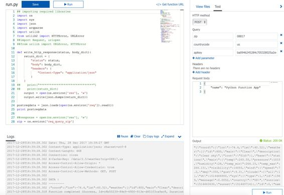
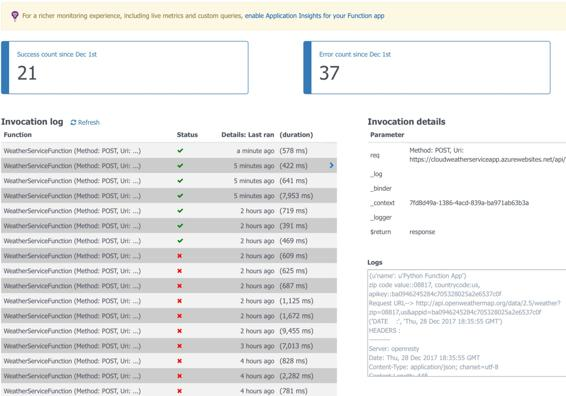
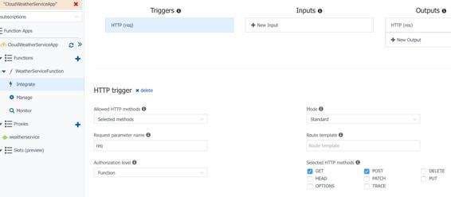
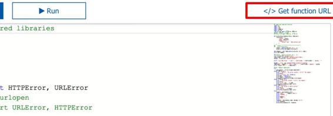
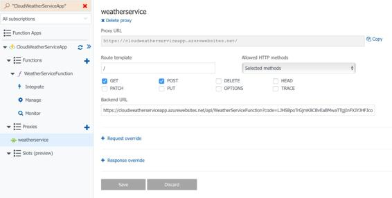

Serverless microservice – walkthrough
In order to create the previously mentioned service, follow these steps in Azure portal:



## importing required libraries
import os
import sys
import json
import argparse
import urllib
from urllib2 import HTTPError, URLError
## response construction and return
def write_http_response(status, body_dict):
return_dict = {
"status": status,
"body": body_dict,
"headers": {
"Content-Type": "application/json"
}
}
output = open(os.environ['res'], 'w')
output.write(json.dumps(return_dict))
## extract input parameter values
zip = os.environ['req_query_zip']
countrycode = os.environ['req_query_countrycode']
apikey = os.environ['req_query_apikey']
print ("zip code value::" + zip + ", countrycode:" + countrycode + ",
apikey::" + apikey)
## construct full URL to invoke OpenWeatherMap service with proper inputs
baseUrl = 'http://api.openweathermap.org/data/2.5/weather'
completeUrl = baseUrl + '?zip=' + zip + ',' + countrycode + '&appid=' + apikey
print('Request URL--> ' + completeUrl)
## Invoke OpenWeatherMap API and parse response with proper exception handling
try:
apiresponse = urllib.urlopen(completeUrl)
except IOError as e:
error = "IOError - The server couldn't fulfill the request."
print(error)
print("I/O error: {0}".format(e))
errorcode = format(e[1])
errorreason = format(e[2])
write_http_response(errorcode, errorreason)
except HTTPError as e:
error = "The server couldn't fulfill the request."
print(error)
print('Error code: ', e.code)
write_http_response(e.code, error)
except URLError as e:
error = "We failed to reach a server."
print(error)
print('Reason: ', e.reason)
write_http_response(e.code, error)
else:
headers = apiresponse.info()
print('DATE :', headers['date'])
print('HEADERS :')
print('---------')
print(headers)
print('DATA :')
print('---------')
response = apiresponse.read().decode('utf-8')
print(response)
write_http_response(200, response)




With this, your serverless microservice is now ready and you can test it using a web browser or CLI, which is detailed in the following subsection.